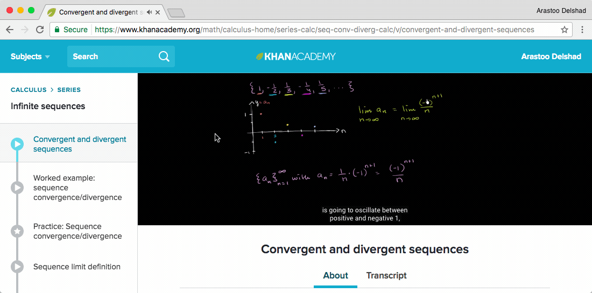
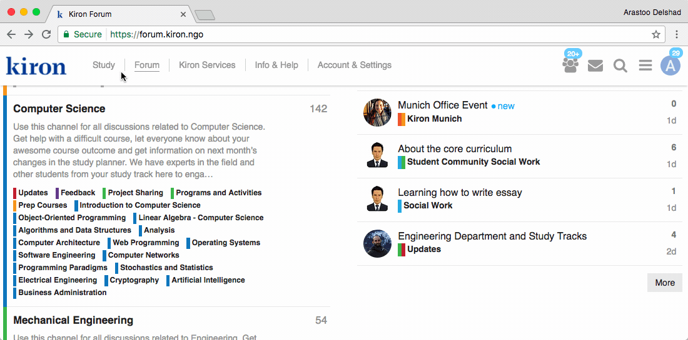

Blended learning
Summary
Blended learning means taking different approaches to getting the most out of the material.
So discuss whatever you are learning! :)
- Use the MOOC’s own Forum | The Forum of MOOC pltaform such as Edx can be used to discuss anything and to connect with all the other learners from around the world.
- Use discussion Websites | On discussion websites ask any question and discuss with online learners.
- Ask Kiron for help! | The Kiron Team is alsways there for you during your studies.
Use the MOOC’s own Forum¶
The Forum of MOOC pltaform such as Edx can be used to discuss anything and to connect with all the other learners from around the world.
Discussion forum of an Edx course
Use discussion Websites¶
On discussion websites ask any question and discuss with online learners.
- Brainly educational questions and answers forum. Ask any question and get answers to any topic.
- Quora and Reddit the leading questions & answers website. Its users are very active, so you can ask anything and get answers quite quickly normally.
- Khan Academy for some topics, you may try looking for external resources with more materials and discussions. For example, Khan Academy would have videos about almost anything in
mathandsciencesand a discussion below each video where you can ask anything or see previous answers.

Discussion forum of a Khan Academy video
Ask Kiron for help!¶
The Kiron Team is alsways there for you during your studies.
- Student Support can be conteacted on the Kiron Campus or via mail: student-support@kiron.ngo
- Kiron Online Study Groups offer you the possibility to study online with other Kiron students. This can be a valuable resourse for getting help from fellow students who might have stumbled accross the same problems as you have.
- Kiron Services offer a variety of ways to get help. Visit the Kiron Campus to find out more about and to sign up for specific services.
- The Kiron Forum can be used to get answers from various Kiron students. The Kiron Student Support is also reguarly monitoring the Forum. Feel free to aks your questions there.

Ouick overview of the Kiron Forum